Lesson 23 · Part 2 · Your workbench · 5 questions
Make the agent prove it works
Read first: Turn unwritten rules into checks
When an agent says "done", it means the work looks done to the model. Write in the brief what done means, give the agent one fast verify script that runs the tests, starts the service and calls it, and ask for the output, not the claim.
The idea
A plumber says "all fixed". You'd still like to see the tap run and the floor under the sink stay dry. "I fitted the pipe" is not "the water flows", and a good plumber shows you without being asked.
An agent's "done" has the same gap. The loop ends when the model replies without a tool call (see The agent loop), and the model replies like that when the work looks finished. If it has nothing to run that says pass or fail, "looks finished" is all it has, and you become the test suite. So close the gap in four steps:
- Write "Done when" in the brief: the commands to run and what they must show. Not "refunds work", but "this request returns 201 and this test passes".
- Put the commands in one script,
./verify, that ends with a clear pass or fail. One command is easy to say in a brief and easy to enforce. - Make it fast. The agent runs it after every change, reads what failed, fixes it and runs it again.
- Ask for evidence: the command it ran and the output, pasted into its final message and the PR.

Up close
Not every kind of proof proves the same thing. Each rung catches mistakes the one below misses:
| Evidence | Proves | Misses |
|---|---|---|
| Builds, lint clean | The code is well-formed | Whether it does the right thing |
| "All tests pass" | Nothing that is tested broke | The new behaviour, if no test touches it |
| A new test, red before and green after | The change does what the test says | Wiring: config, migrations, startup |
| Service started, real request answered | It works end to end on your laptop | Production data and load |
Agents often stop at the second rung, and it's the one that misleads most. "312 tests pass" is true even when none of them runs the line that changed. Two cheap fixes. Ask for the test first, and for its failing output before the fix: a test that never failed may not test anything. And measure diff coverage: of the lines this change touched, how many did the tests run? The open-source diff-cover reads a normal coverage report and compares it with git diff against origin/main.
The top rung needs the service to start on your laptop. If it can't, that is a setup gap to fix, not a step to skip: a docker compose file with the database, the broker and seed data. Part 3 builds one for a whole practice system.
A brief with a definition of done, building on the BRIEF.md from One folder per task:
Goal: refunds take a reason code.
Done when:
- ./verify passes; paste its output
- new test, shown failing first:
POST /refunds without a reason
returns 422
- POST tests/smoke/refund.json
returns 201 with the reason
- no existing test edited or skippedMaking it stick
A line in the brief is still a request. To make it a rule, use a Stop hook, which Hooks and permissions introduced: Claude Code runs it whenever the agent tries to end its turn, and exit 2 sends the agent back to work with your stderr as the reason.
#!/bin/bash
# hooks/stop.sh: runs each time the
# agent tries to finish its turn
cd "$CLAUDE_PROJECT_DIR"
# nothing changed: nothing to prove
git diff --quiet origin/main && exit 0
log=$(mktemp)
./verify >"$log" 2>&1 && exit 0
# the agent reads this and goes on
tail -n 30 "$log" >&2
exit 2Register it under "Stop" in .claude/settings.json, like the other hooks. Three details from Claude Code's docs:
- It runs at the end of every turn, even when you only asked a question. That's why the script skips the check when nothing has changed.
- It can't loop forever. After eight blocks in a row with no tool call between them, Claude Code ends the turn anyway. The hook's input also has
stop_hook_active, which is true when the agent is already continuing because of a stop hook. - A command hook times out after 600 seconds by default, and a timed-out hook decides nothing, so the agent simply stops. A slow verify doesn't hold the line; it waves everything through.
So speed is part of the design, not a nicety. A 40-second verify runs after every change. A 20-minute one runs once at the end, or never. In verify, run the tests for the area you're changing and one smoke request, and leave the full suite to CI.
At your laptop
Write a verify script for one service. A Python version, using pytest-cov and diff-cover:
#!/bin/bash
# verify: run before saying "done";
# paste the output into the PR
set -euo pipefail
echo "== lint"
ruff check .
echo "== tests"
pytest -q --cov=src \
--cov-report=xml
echo "== changed lines tested?"
diff-cover coverage.xml \
--compare-branch=origin/main \
--fail-under=80
echo "== start the service"
docker compose up --wait api
echo "== smoke request"
curl -sS --fail-with-body \
--json @tests/smoke/refund.json \
localhost:8080/refunds
echo; echo "VERIFY OK"docker compose up --waitreturns only once the service and what it depends on are running or healthy.curl --jsonsends a JSON POST;--fail-with-bodyfails on an HTTP error but still prints the error body, so the agent sees why.set -estops at the first failure, and the==lines show which step it was.
Add one line to CLAUDE.md: "Before you say done, run ./verify and paste its output." Then try it: ask for a small change, and break the smoke request on purpose to watch the agent read the error and fix it.
Your turn
Question 1 · ~2 min
The agent changes how refunds are rounded and reports: "Done. All 312 tests pass." The diff touches rounding.py and no test file. How much does "312 pass" tell you about the change?
Show answer
Almost nothing. It tells you nothing that was already tested broke. If no test runs the changed lines, the new rounding could be wrong and all 312 would still pass. Ask for a test of the new rounding, shown failing before the fix and passing after, and check diff coverage: diff-cover would show the changed lines as never run.
Question 2 · ~2 min
The payments service needs Postgres, Kafka and secrets from a vault to start. The agent writes: "I couldn't start the service locally, but the code looks correct and unit tests pass. Done." What do you do?
Show answer
Treat it as not verified, and fix the setup, not the agent. It was honest: it had no way to run the service. Until there is one, every task stops at "tests pass". Give it one command that starts the service with its dependencies (a compose file with a local database, a broker and fake secrets), and add the smoke request to verify. That work pays off on every future task, yours too.
Question 3 · ~2 min
verify was red on test_refund_total, which expected 10.00. On the next run it's green. The diff shows the agent changed the expected value to 9.99. Is the task done?
Show answer
Not yet: green is what you asked for, and it took the shortest way there. Maybe the old value was wrong and the change is right, but that is a decision for a human, not a side effect. Say in "Done when" that existing tests mustn't be edited or skipped without asking, and have verify print git diff --stat origin/main -- tests/ so test changes show up in the evidence.
Question 4 · ~3 min
To be thorough, your verify runs the full integration suite: 25 minutes. You call it from a Stop hook with the default settings. What happens when the agent tries to finish?
Hint
Show answer
The hook times out after 600 seconds and decides nothing, so the agent stops as if the check had passed. Even with a longer timeout, a 25-minute check gets run once, not after every change, and each fix waits nearly half an hour for feedback. Keep verify to the area you changed plus a smoke request, ideally under a couple of minutes, and run the full suite in CI.
Question 5 · ~3 min
Stretch: Docker isn't running on your laptop. Your Stop hook runs verify, which fails at docker compose up, so the hook exits 2. The agent edits code, tries to stop, is blocked again, and repeats for twenty minutes. Why doesn't the eight-block limit end it, and how should the hook behave?
Hint
Show answer
The count resets every time the agent calls a tool, and each round it edits something. Yet no edit can fix a missing Docker daemon. Exit 2 should mean "your change fails a check". When the environment is broken, exit with another code: Claude Code treats that as a non-blocking hook error, so the turn ends and the notice shows the first line of your stderr. For example, run docker info first and exit 1 if it fails.
Interesting fact: One bolt
Toyota calls it jidoka: a machine or a person stops the line the moment something is wrong, so a defect never travels on. Toyota traces the idea to Sakichi Toyoda's 1896 power loom, which had a device that stopped it automatically when a weft thread broke. On a Toyota line, an operator can pull a stop cord, and a board called the andon lights up to call for help. In 1984 Toyota and GM opened NUMMI, a joint plant in GM's old factory in Fremont, California, closed in 1982. A union official called its workforce "the worst workforce in the automobile industry in the United States", and over 85% of NUMMI's staff were old hands from that plant. At GM, they said, you never stopped the line. Toyota sent workers to Japan, where Earl Ferguson watched a team stop the line to fix a single bad bolt, instead of sending the car on with more parts piled on top. "One bolt changed my attitude," he said. The first pull summoned team leaders; the line stopped only if they couldn't fix the problem. From the start, NUMMI's defect rate was one of the best in America. When GM put andon cords into its own plants, some workers got yelled at for pulling them, and a few plants cut the cords down. A check helps only if stopping is allowed.
Facts checked: November 2026 (Claude Code docs: best practices, hooks reference; diff-cover README; Docker Compose and curl manuals; Toyota, "Toyota Production System"; This American Life #403, "NUMMI", 26 March 2010).
Answers
- Question 1
Almost nothing. It tells you nothing that was already tested broke. If no test runs the changed lines, the new rounding could be wrong and all 312 would still pass. Ask for a test of the new rounding, shown failing before the fix and passing after, and check diff coverage:
diff-coverwould show the changed lines as never run. - Question 2
Treat it as not verified, and fix the setup, not the agent. It was honest: it had no way to run the service. Until there is one, every task stops at "tests pass". Give it one command that starts the service with its dependencies (a compose file with a local database, a broker and fake secrets), and add the smoke request to
verify. That work pays off on every future task, yours too. - Question 3
Not yet: green is what you asked for, and it took the shortest way there. Maybe the old value was wrong and the change is right, but that is a decision for a human, not a side effect. Say in "Done when" that existing tests mustn't be edited or skipped without asking, and have
verifyprintgit diff --stat origin/main -- tests/so test changes show up in the evidence. - Question 4
The hook times out after 600 seconds and decides nothing, so the agent stops as if the check had passed. Even with a longer timeout, a 25-minute check gets run once, not after every change, and each fix waits nearly half an hour for feedback. Keep
verifyto the area you changed plus a smoke request, ideally under a couple of minutes, and run the full suite in CI. - Question 5
The count resets every time the agent calls a tool, and each round it edits something. Yet no edit can fix a missing Docker daemon. Exit 2 should mean "your change fails a check". When the environment is broken, exit with another code: Claude Code treats that as a non-blocking hook error, so the turn ends and the notice shows the first line of your stderr. For example, run
docker infofirst andexit 1if it fails.